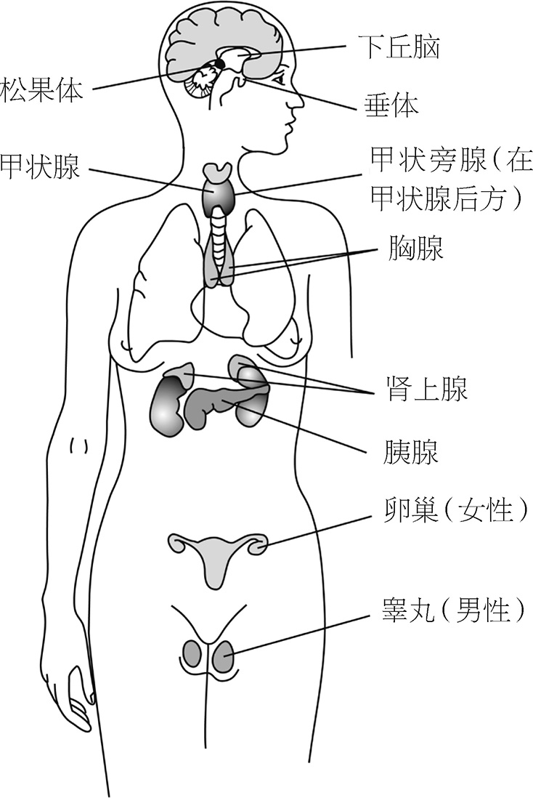
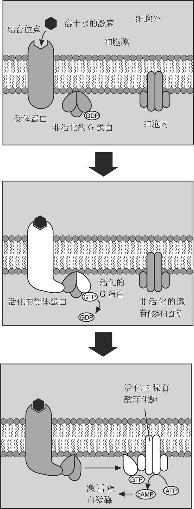
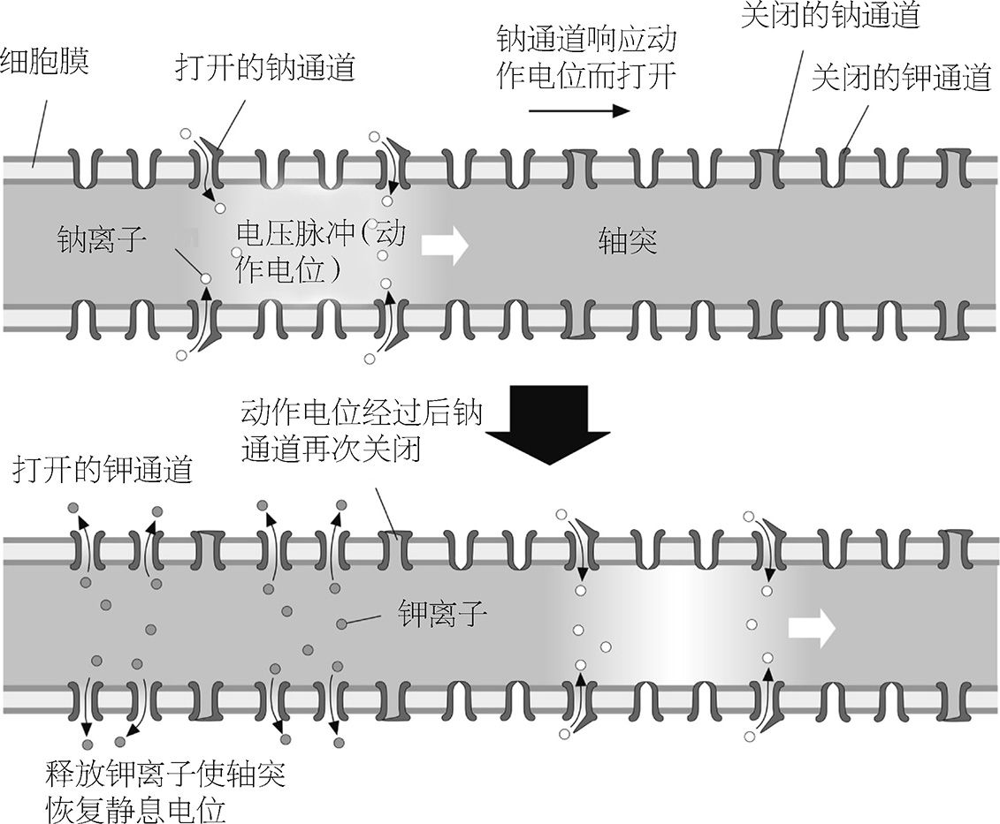
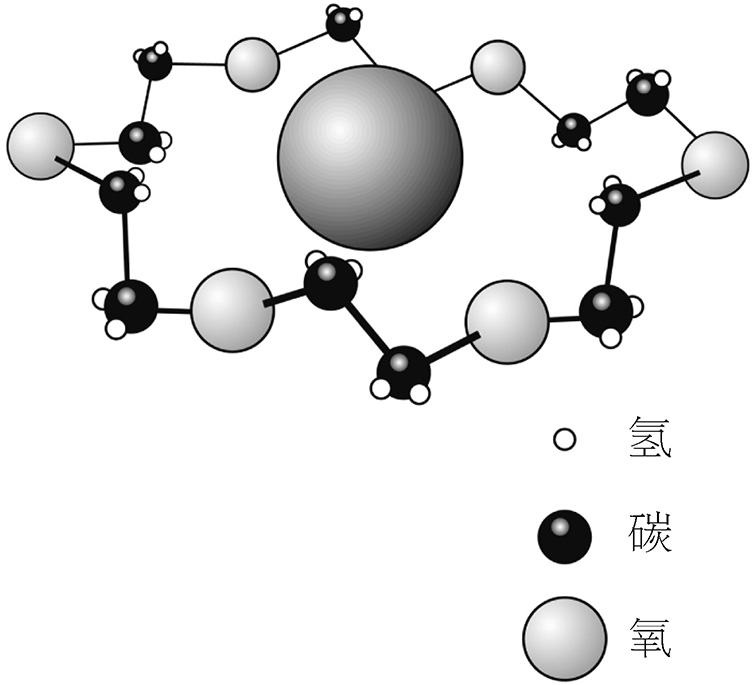
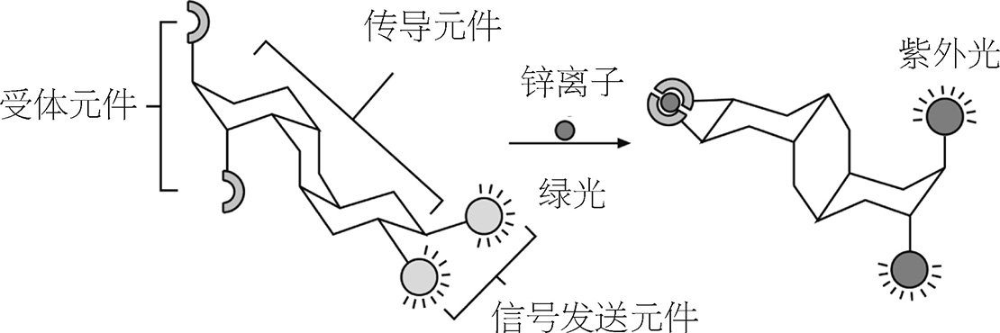

我们每一个个体都是一片新世界。而从分子的视角看生命，一个个细胞非常像一座座城市，里面住满了分子居民。我们多细胞的躯体正是不同城镇之间协调合作的产物。细胞和细胞之间需要相互沟通，就像伦敦和利物浦、纽约和费城——信息会沿着电线传递，或是由信报员来送达。血液和淋巴循环系统像交通运输网，货物在路网上输送到四面八方。正如贝采里乌斯所言：“这种生命的力量 是身体机能与原料之间相互作用的结果。”
长久以来，分子生物学只满足于记录细胞的社会网络：推断哪种分子在对哪种分子说话，分子怎么来、怎么去。但这终究是不够的。我们还需要知道，分子说了些什么，信息是怎样一步步地传递的。药物化学家可以利用这些信息来研发新药。医学中一个基本的大问题就是搞清怎样参与体内分子的对话，从而拦截有害的或令人不适的信息，发出新的警告信息，阻止那些不希望发生的相互作用。
很大程度上由于生物化学领域的这些努力，化学本身的面貌得以焕然一新。化学家在生物学中看到的种种可能性点燃了他们的想象力。尽管化学工业有很大一部分致力于生产“消极”的产品——新型的塑料、水泥、粘胶、颜料、合成纤维——但药物分子却总是与它们有点不一样。药物的任务是要参与到一个动态的过程中，去影响细胞的活跃生命。它们像是在扮演剧中角色的演员——诚然，它们经常要靠扮演别人来发挥作用。如今，化学家也已经开始认识到，可以在纯合成化学系统中实现这样的动态活力。于是化学逐渐地较少关注单种分子的性质，而更多地去关注一群不同的分子如何作用——彼此结合或破裂，相互修改各自的趋向性，传递信号。化学开始成为一种过程 的科学。
本书中我讨论的很多成果都支持这样的观点，比如研发分子太阳能电池、化学传感器、分子纳米技术、进行信息处理的分子器件等。这个领域内的很多研究都可以用超分子化学 这一词来概括，意即超越了分子的化学——关于沟通着的分子的科学。
在本章中，我会首先探索生物学里分子负责通信的几种方式，之后再稍微领略一下如何对合成分子促进类似的群居共生。和以往一样，我们必须记住，尽管大自然是有启发性的，但它却也是吝啬和盲目的。生物所使用材料的广度很有限，而且生物倾向于无止境地为适应新的目的而给出还不错的解决方案，不会每次都完整地探索整条新的大道。正如喷气式飞机并不是放大版的鸽子，睿智的分子工程师从自然界中得到的是原理，而不是设计图。
当星罗棋布的小王国和小城邦为了合作共赢而一致尊重中央当局的权威时，意大利和德国才成其为国家。同样，若不是细胞们类似行事，我们的躯体也就无法成为一个有一致性的整体。这意味着，体内必须要有某种机制，可以向全身发送关于动作的指示、命令和召唤。从大脑出发的神经信号就是躯体协调动作的一种方式。它们是躯体的电话系统。
而在整个 身体范围内传送的常规信息则像是寄信，以分子形式作为群发邮件投入血液，这种分子就称为激素 。激素的形态和功能多种多样。有的激素是大蛋白质，有的则是小有机分子。有的溶于水，有的则不溶（也就意味着要有信使分子在血液中携带它们）。有的传递紧急消息，比如“快跑！”有的则产生长期的效应，比如促进成长或者性征的发育。
所有激素都是内分泌系统 的产物，这个系统包含一系列腺体，它们组成了对整个身体至关重要的调控体系（如图33）。我们已经看到了胰腺中产生的胰岛素和胰高血糖素如何控制血糖含量（参见第78页）。与此类似，细胞的代谢速率是由甲状腺所释放的甲状腺素和三碘甲腺原氨酸所调节的。这些激素能够一定程度地改变心跳速率，从而影响能量的产生和氧的消耗。

内分泌系统的控制中心是一个脑部的腺体——下丘脑。下丘脑与它下方的垂体相连，激素就从垂体出发被派遣到其他腺体。例如，代谢速率下降会刺激下丘脑，下丘脑向垂体发出一种叫作促甲状腺激素释放激素的分子。垂体继而就开始发出促甲状腺激素，触发甲状腺采取行动。
垂体释放的所有激素都是多肽，即像蛋白质的较小分子。例如，抗利尿激素通过调节肾脏中尿液的生成来控制体内的含水量。生长激素刺激细胞的增殖，在儿童期和青春期发挥重要的作用。生长激素还能在需要修复时——如伤口愈合时，刺激组织的局部生长。
肾上腺制造一些重要的类固醇激素。这些不溶分子的碳骨架含有若干连在一起的小环。某些类固醇——如皮质醇——能够调节身体能量源的储存和利用，即葡萄糖到糖原的转化，及蛋白质切断成氨基酸。健美人士及运动员会利用这些激素（合法地或非法地）增加体重、锻炼肌肉。
正如你可能已经想到的，肾上腺素也产自肾上腺。在身体响应压力时，它和去甲肾上腺素一起，会迅速释放到血液中。这两种激素能使心率加快，血管扩张，提高对肌肉的供氧量，从而为肌肉最大限度发力做好准备。
性腺（女性为卵巢，男性为睾丸）所释放的激素能够分化性别，并在青春期引发发育的变化。男性体内的睾酮促进精子的产生。女性体内的雌激素和孕酮控制女性生理周期，而这两种激素的制造又是由垂体释放的激素调节的，分别称为卵泡刺激素（FSH）和黄体生成素（LH）。
上述两种激素调节着女性在月经周期中的排卵。在妊娠早期，血液中高含量的孕激素和孕酮抑制了FSH和LH的产生，从而抑制排卵。避孕药也有相同的效果：药里包含雌激素和孕酮，从而诱骗女性的身体以为她已经怀孕了。
当女性到了30多岁时，雌激素的产生量就会下降，特别是在更年期。低水平雌激素的副作用包括易感冠心病、骨质疏松等，这恰是调控雌激素进行激素替代疗法的两种最主要的疾病。这种治疗方法仍然存在争议，因为长期使用雌激素本身也会有副作用，包括易感乳腺癌及各种心脏病。
人体怎样解读激素信息呢？这依赖于信息本身的特性。有的激素可以穿过细胞膜，在细胞里与受体蛋白结合。这样就可以激发受体，刺激特定基因的转录，制造出细胞所需的蛋白质。这称作激素的基因直接作用机制，它作用于较小的不可溶激素，因而能够穿过脂类组成的细胞膜。
但很多激素最多只能敲敲细胞的大门而已，尤其是那些多肽和蛋白质分子的激素。它们会在细胞表面得到管家——受体蛋白的接待，受体蛋白的任务就是将信息传达至细胞内的其他分子。
和大多数分子通信类似，信息从激素传达到受体蛋白的方式颇为亲昵。分子之间毫不拘束，它们通过紧密的拥抱来传话。分子没有什么别的办法来相互识别，只能靠“触碰”辨识彼此，即受体与目标分子（底物）形状精确相符，嵌合在一起，如同钥匙配锁一般。细胞表面的每一个激素受体蛋白都有一个结合位点，形状塑造得恰好能与激素吻合。
尽管激素传递的信息多种多样，信号从细胞表面的受体蛋白传递到细胞内部的机制却几乎在所有情形下都是一样的。这个过程涉及一连串的分子相互作用，分子如接力般一个转化另一个。在细胞生物学中这称作信号转导 。在信息进行接力传递的同时，相互作用还把信号放大了，于是单个激素分子与受体的对接就能在细胞里产生一个大动静。
这个过程是这样的：受体蛋白横跨整个细胞膜的厚度，激素结合位点在外表面伸出，而底部则从内表面露出（如图34）。当受体结合了目标激素时，一个形变就会传递到蛋白质下表面，使它成为一种酶。

这个酶所催化的过程是一种附着在膜内表面上的名叫G蛋白的分子“活化”。G蛋白的全称是鸟苷酸结合蛋白，即它能够抓住一个鸟苷二磷酸（GDP）分子。受体结合了激素后，就可以与一个抓住了GDP的G蛋白反应，G蛋白首先用鸟苷三磷酸（GTP，类似于富含能量的ATP）来替换GDP，接着整个分子一分为二。结合有GTP的那一半成为了一种酶，它会离开并激活另一种位于细胞膜内表面上的酶。这种酶通常是腺苷酸环化酶，它能将ATP转化为环状AMP（cAMP）。
这个过程之前的所有参与者都卡在细胞膜上。但cAMP则能够自由地游动于细胞质中，能将信号传递到细胞内部。因为它从“第一信使”（激素）得到信号，并作为代理人传送到细胞社区中，所以它就称为“第二信使”。cAMP能够附着在称为蛋白激酶的蛋白质分子上，使得这种分子又变为活化的酶。大部分蛋白激酶能通过附加磷酸基团（一种称作磷酸化的反应）开启或关闭别的酶。蛋白激酶的行为启动了一连串的反应，每个蛋白激酶都可以作用于好几个酶分子，而下一个酶也可以作用于多个分子。这样一来，单个激素与受体对接就可以影响到细胞内部的很多分子，使信号得到放大。
这个过程可能听起来非常繁复，但它无非就是分子的接力。信号从激素传递到受体，再到G蛋白，经过一个酶后到达第二信使，继而到达蛋白激酶，依次继续下去。
信号转导的G蛋白机制是在1970年代由阿尔弗雷德·吉尔曼和马丁·罗德贝尔发现的，他们因此获得了1994年的诺贝尔医学奖。这种机制代表了信息通过细胞膜的最广泛的一种方式。有的激素可能对细胞进程起到的是减缓而非刺激作用，这种情况下活化G蛋白就可能针对目标酶表现抑制效应，而不是去激活它们。还有的时候，第二信使可能是非cAMP的其他小分子：比如，特定的活化G蛋白能够触发一种结合钙的蛋白质——钙调蛋白去释放钙离子。
利用G蛋白机制的也并非只有激素信号。我们的视觉和嗅觉同样涉及信号的转导，也会使用相同的转化过程。鼻腔的顶部排列着嗅觉传感器，称为嗅毛。嗅毛连接在神经细胞的末端，细胞能将信号传送到嗅球，即大脑的“嗅觉中心”。嗅毛的细胞膜上就分布着受体蛋白，它们专门结合进入鼻腔的特定的带气味分子。
嗅觉传感器有几百种不同种类，每种都带有一个结合位点，其形状恰好能接收某一种特定的常见气味。然而，我们能辨别的气味的范围要远远大于此，这是因为每种气味一般都是不同气味分子混合的结果。嗅球从不同的传感器获得混合的刺激，形成一种气味的“图像”，就像我们通过面部不同部分的总和来辨识一个人一样。
在气味信号产生时，G蛋白生成的cAMP会与一种称作钠通道的膜蛋白结合，打开通道使钠离子流进细胞。这就激发了一个神经冲动，会传导至嗅球。光刺激视神经细胞产生视觉信号也有着相同的过程。
我们的味觉大部分都可以归结于嗅觉系统。舌头上的味蕾只能辨别较低级的特征味道：甜、苦、咸和酸。而成熟的奶酪和新鲜出炉的面包带来的愉悦则大部分来自它们所释放的气味 分子。
虽然激素能够开启复杂的生物化学反应网，但它们所携带的信息却是相当粗糙的，只与生物成长和生存中最迫切的需求相关。而创造了西斯廷教堂、《魔笛》、相对论的分子间通信就是另一回事了。可归根结底，人脑也只是由分子组成的而已。
不过时至今日，大脑还是一个谜团，是科学中一大未解之谜。有的科学家认为大脑永远无法完全理解其自身，因为这个问题所具有的自我指涉的本性总会造成盲点。而有的科学家则相信，对意识的科学解释已经在地平线上显露出来了。不管怎样看待，大脑的秘密可能都远远超越了单纯分子的领地，而根植于与复杂的、紧密关联的信息网络的表现相关的问题之中。在这里我们看到了还原论的局限：尽管思想的分子过程我们已经描绘清楚了，但总体性的影响我们却一无所知。
大脑中包含很多脑细胞，或者称神经元 ，总数在10亿至1000亿之间。这并不值得夸耀一番，别的器官的细胞数量也与此不相上下。但大脑与众不同之处在于这些细胞间通信网络的复杂性。每个神经元都有大约1000个对外的连接，于是整个大脑中就有多达100万亿的细胞间连接，差不多相当于1000个银河系里星星的数量。在这样的输送网络中，你瞬间就会迷失。计算机中集成电路的连接数量远不及此，因此也就难怪对于某些小孩子一下就能完成的任务，计算机即使算得再快也会悲惨地失败。
神经元会发送神经信号——其本质是电脉冲，信号沿着称作轴突的管状通道传送，传向另一个神经元。轴突的末尾是一系列枝杈，它们的尖端连接着其他神经元的细胞膜。这些连接处称为突触，在这里神经信号从一个神经元传递到另一个。神经元还会伸出许多较短的、繁茂的分支，称为树突，负责从其他神经元的轴突处收集信息。如果你喜欢，可以把轴突比作大脑的高速路，从一个神经元城市延伸到另一个。在突触的地方，高速路就进入了岔路，连接到树突，进入另一个城市的路网。
尽管轴突信号是电信号，但它们与电路中金属导线上的信号有所不同。轴突基本上是管状的细胞膜，沿纵向分布着允许钠离子和钾离子出入的通道。有的离子通道永远都是打开的；有的则有“大门”，根据电信号做出开关反应。还有的其实并不是通道，而实际上是个泵，积极地将钠离子排到外面，将钾离子拉到内部。这些钠-钾泵能够将离子向能量升高方向移动，即将离子从低浓度区域移向高浓度区域，它们能这样做的原因是从ATP得到了能量。
在“静息”状态，轴突内部和外部的钠离子和钾离子是不平衡的，造成膜两侧电荷的差异，亦即电位的差异：内侧液体比外侧多带一些负电荷（即“静息电位”）。当信号沿着轴突传递时，部分有大门的钠通道打开了，改变了离子的分布，使不平衡状态发生反转——内侧比外侧多带正电荷。此处的电位反转又进而打开了前方的钠通道，于是就沿着轴突移动下去。同时，后方的通道关闭，恢复了静息电位。电压脉冲或“动作电位”就这样沿着轴突传递下去（如图35）。

在突触处，神经冲动会从一个轴突传到另一个神经元。信号一般先从电形式转化为化学形式。一种称为神经递质的小分子信使会将信号传过轴突末端膜与另一神经元膜之间的这段空间（称作突触间隙）。神经递质原本包裹在轴突细胞内小泡状的膜结构里，小泡与轴突细胞膜融合，这些分子信息释放到了突触间隙。神经递质移动到另一神经元细胞膜的外表面，与受体蛋白相结合。
有很多种不同的分子都可以作为神经递质。有的是简单的氨基酸，如甘氨酸和谷氨酸，或者是它们的衍生分子，如血清素和多巴胺。乙酰胆碱是在神经和肌肉连接处将信息从中枢神经系统传递到肌肉细胞的一种分子（参见第103页）。当乙酰胆碱与肌肉细胞上的受体结合时，受体就会转化为一个打开的钠通道。钠离子涌入细胞，改变细胞膜两侧的电压，打开电压控制的钙通道，这样就触发了细胞内部钙离子浓度的升高，刺激肌肉收缩。
乙酰胆碱体现了神经递质的普遍功能：打开或关闭离子通道，从而改变受体所在的膜两侧的电压。这就将化学信息重新转变为电信息。乙酰胆碱能直接完成这项任务，因为它的受体本身就是离子通道。其他的神经传递途径的作用方式与此不同：它们能使用第二信使将神经递质的信息转变为离子通道，和之前一样也用到G蛋白作为媒介。
G蛋白信号转导机制出现在如此多不同的场合，这不令人感到惊奇吗？其实不算。随着复杂的多细胞生物的进化，细胞也拥有越来越多专门的功能，而细胞的共同祖先则拥有较为普遍的功能。尽管必要的时候生物会适应环境，但对于特定的任务，久经考验的机制还是会保留下来。这也就是为什么我们会与酵母、细菌共享相同的一些基因。G蛋白通路就是一种将膜外化学信息传递到膜内的有效方式，还能在过程中放大信号。细胞的格言是：能用则用。
神经信号转导是药物的一种常见作用目标——可能起到有益的作用，也可能有害，也可能令人愉悦，或者依赖于剂量而发挥所有这三种效果。神经系统是人体最脆弱的部分之一：如果神经冲动被阻断，我们就不能动了。很多动物能够产生毒素，攻击捕食者轴突上的钠-钾泵或者电压控制的离子通道，从而阻碍动作电位的传导，使捕食者麻痹。
与乙酰胆碱相像的药物分子会在神经肌肉连接处，和真正的乙酰胆碱竞争结合受体蛋白，从而影响肌肉动作。香烟中的活性成分尼古丁就是这样一种分子：它能够在肌肉上与特定的一类乙酰胆碱受体相结合，从而产生相关的刺激感受，使心率提高，瞳孔放大。但人们还没有完全理解，为什么这样的感受会令人愉悦。箭毒是一种致命的毒剂，存在于南美洲一种植物的树皮中，土著人曾经将它提取出来涂在箭头上。箭毒和尼古丁一样，会结合同一类乙酰胆碱受体，但并不激活它们，于是就阻止了肌肉的动作。中了箭毒的动物无法使肺脏扩张，会死于窒息。中世纪的一种毒药——毒芹也发挥相同的作用。
有的神经递质会刺激神经元，但也有的神经递质会起到使神经元平静下来的作用，即压制动作电位的火力。这些物质称为抑制剂，其中包括甘氨酸和γ-氨基丁酸（GABA）。我们的意识是刺激和抑制之间复杂的交互作用，神经元会权衡它从各个邻居那里收到的不同信号，来决定自身是否应该激发。
LSD（麦角酰二乙胺）和墨司卡林这类致幻药物能够通过提高血清素的刺激效应来过度刺激大脑。毒药士的宁能阻碍抑制信号，引起肌肉失控地抽搐，导致十分痛苦的死亡。镇静剂则能够辅助抑制性神经递质的结合，或者（如酒精）干预刺激性神经递质的作用。
减轻疼痛的药物通常都与抑制性受体打交道。鸦片中的主要活性成分吗啡，能与脊髓中的鸦片类受体结合，从而抑制疼痛信号传递到大脑。大脑中同样也有鸦片类受体，所以吗啡和相关鸦片类药物既对大脑也对躯体产生作用。大脑中的这些受体本身是一类称作内啡肽的多肽分子的结合位点，内啡肽是大脑响应疼痛而产生的。有一些内啡肽本身就是功能极强的止痛药。
大麻素是大麻的活性成分，它同样能与大脑中的抑制性神经受体相结合，从而缓解疼痛。这些受体的天然靶物是称作内源性大麻素的分子，这种分子像内啡肽一样也是在响应疼痛信号时产生的。有一种和它紧密相关的分子称作油酰胺，这种分子似乎是自然睡眠的生化触发剂。
并非所有的止痛药都是通过阻碍疼痛信号而发挥作用的。有的甚至能直接阻止信号发出。疼痛信号由称作前列腺素的多肽引发，它是由受迫的细胞生成并释放的。阿司匹林（乙酰水杨酸）能与一种负责合成前列腺素的酶相嵌并加以抑制，于是从根源上切断了疼痛的呼喊。可惜的是，前列腺素还负责制造保护胃黏膜的黏液（参见第78页），所以阿司匹林的一项副作用就是可能引起胃溃疡。
神经科学新近有一项惊人发现：非常小的无机分子同样能够作为神经递质。一氧化碳和一氧化氮都是双原子分子，它们就可以发挥这样的功能。在大剂量下，它们都是有毒的，因为它们会与氧气竞争结合血红蛋白。但“毒性离不开剂量”，少量的一氧化氮则能做一些重要的事情。它能触发血管的扩张，减轻心脏的压力。硝化甘油之所以能治疗心脏问题，就是因为它能分解并释放一氧化氮。伟哥这种药物用于治疗男性勃起障碍的基础也正是用一氧化氮来改善血液循环。
最近几十年，科学家对在合成系统中模仿细胞的部分分子通信过程产生了兴趣。他们的动机有很多。药物研发经常要编造一个良好的伪装，使得合成分子能够冒充成天然分子，且更容易与受体结合，从而阻碍或者引发一种生物化学信号。眼睛的视网膜细胞和嗅觉系统中都发生了信号转导，这启发了我们提出分子传感器的概念，用这样的传感器能以很高的灵敏度检测到光或其他分子。分子工程师正在研究嗅觉器官，期待从中获取灵感来设计“人工鼻子”，用以鉴别复杂的分子混合物。
“锁钥原理”是自然界高声歌颂的一项原理：分子相合则相聚。 注 若将这种“相识”转变为通信的过程，就需要让结合的事件能触发受体的某种转化，使信号能够继续传递下去。在生物当中，这种传递过程一般是催化，即结合使得受体转变为活化酶。不过信号也可以通过其他方式传递：比如释放光或释放电子，或者（像乙酰胆碱受体一样）产生电化学势。
在超分子化学中，构建分子尺度上的人工信号转导过程是个常见的目标。这个领域正是受到生物学的启发而肇始的。1960年代，法国化学家让-玛丽·莱恩研究了所谓的冠醚分子，这种分子可以识别并结合特定的金属离子。莱恩的兴趣点是将钠离子和钾离子输送通过脂质膜。除了经由蛋白质通道和离子泵来传送外，还有另一种策略，即用分子把离子包裹起来，而分子“可溶解”于脂类细胞膜的内部。这种分子是天然存在的，名字称为离子载体。一个典型的例子是缬氨霉素，这是个环形的多肽，中间的空洞适合填入钾离子。冠醚则是模仿缬氨霉素的合成物质，它们同样也是环形，也能在中间的空洞结合金属离子。根据空洞与离子的相对大小不同，金属离子结合的紧密程度也有所不同。若空洞过大，则金属离子结合得较松散，会在里面“撞来撞去”；若空洞过小，金属离子就填不进去了。因此，我们可以调节冠醚使它适合特定的金属离子——换言之就是要展示分子识别的威力。
到了1970年代，莱恩和其他研究人员制出了各种形状和尺寸的合成受体分子，设计出的空洞能够适合范围很广的目标物，包括无机的，也包括有机的。这些“客人”分子被它们的主人用相互作用力抓住，这种相互作用比分子用来抓住自身原子的共价键要弱。这样客人就有可能被抓起来，然后再被释放。这正是缬氨霉素运送铁离子的方式：缬氨霉素先在膜的一侧捕捉一个离子，通过膜之后在另一侧把离子释放。超分子化学，本质上正是谈论用松散的联系把分子结合起来，又可以使它们解离成各个部分。
当冠醚抓起一个金属离子时，它们就会变形。冠醚单独存在时，是个非常松弛、软绵绵的环，像橡皮筋一样。当中心带有金属离子时，它就组织成较为稳固的结构，环上有了“之”字形的弯曲，也就是像个皇冠（如图36）。受体结合了标的物时，通常都会发生类似的变形。

如果我们的目标只是要结合而已，那么较大的变形就不太如意，因为受体的内部重组会让结合变得麻烦，较难实现。这也是为什么很多超分子的主人部分会设计得使它们在接收客人前就预先排列好，让结合引发的变形达到最小化。
但如果我们的意图是利用结合来触发信号的向下传递，那变形就常常是很关键的了。2000年，柏林洪堡大学的乌尔里克·薛尔特和同事们报告，发现一例主客结合所引发的巨大变形。他们制造了一种受体分子，你可以认为它是一系列“更小的分子”，包括两只胳膊，两条腿，还有一个像灵活的躯干的“传感器”元件把胳膊和腿都连接起来。若两只胳膊合起来围住一个锌离子，传感器元件就会翻个跟头，把两条腿拉开（如图37）。两条腿的末端有荧光基团，当它们距离增加时就会改变发射波长，从绿光变为紫外光。研究者们指出，这种受体分子显示出蛋白质受体在信号转导方面所具有的一些特性，与标的物结合时做出响应，一方面形状发生变化，另一方面行为也能发生变化。

人们通过分子工程，已经在好几种其他的合成受体上实现了由变形导致分子发光性质的改变。但要像G蛋白信号机制那样，通过识别与结合来转化分子的催化 行为，则困难得多，因为这就要确保最终的形状恰恰就是催化剂能够工作的形状。而要将好几种分子组织成一条信号传递流，就更加困难了。无论如何，超分子化学家们的技能也在日益增长，如果我们很快就能看到人造分子通信系统协调地工作，像人体那样精妙和谐地调节着自身的领地，那也不值得大惊小怪。